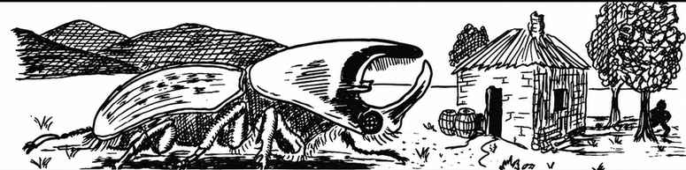

巨型甲虫 · Beetle, Giant
巨型甲虫分为六种。它们的基本数据如下。

| 项目 | 轰炸甲虫 | 钻地甲虫 | 火甲虫 | 犀甲虫 | 雄鹿甲虫 | 水甲虫 |
|---|---|---|---|---|---|---|
| 出现频率 | 常见 | 常见 | 常见 | 不常见 | 常见 | 常见 |
| 出现数量 | 3–12 | 3–18 | 3–12 | 1–6 | 2–12 | 1–12 |
| 护甲等级 | 4 | 3 | 4 | 2 | 3 | 3 |
| 移动力 | 9 寸 | 6 寸 | 12 寸 | 6 寸 | 6 寸 | 3 寸／12 寸（水中） |
| 生命骰 | 2+2 | 5 | 1+2 | 12 | 7 | 4 |
| 在巢穴概率 | 无 | 40% | 无 | 无 | 无 | 无 |
| 财宝类型 | 无 | C、R、S、T | 无 | 无 | 无 | 无 |
| 攻击次数 | 1 | 1 | 1 | 2 | 3 | 1 |
| 攻击伤害 | 2–12 | 5–20 | 2–8 | 3–18／2–16 | 4–16／1–10／1–10 | 3–18 |
| 特殊攻击 | 酸云 | 无 | 无 | 无 | 无 | 无 |
| 特殊防御 | 火云 | 无 | 无 | 无 | 无 | 无 |
| 魔法抗性 | 标准 | 标准 | 标准 | 标准 | 标准 | 标准 |
| 智力 | 非智能 | 动物 | 非智能 | 非智能 | 非智能 | 非智能 |
| 阵营 | 中立 | 中立 | 中立 | 中立 | 中立 | 中立 |
| 体型 | M（长 4 尺） | L（长 9 尺） | S（长 2.5 尺） | L（长 12 尺，另有长角） | L（长 10 尺） | L（长 6 尺） |
| 灵能能力 | 无；攻击／防御模式：无 | 无；攻击／防御模式：无 | 无；攻击／防御模式：无 | 无；攻击／防御模式：无 | 无；攻击／防御模式：无 | 无；攻击／防御模式：无 |
所有甲虫基本上都没有智能，而且总是饥肠辘辘。它们几乎会吃任何有机物，包括其他种类的甲虫。甲虫用触角或触须品尝食物；如果确认是有机物，便用大颚夹住、碾碎并吞食。它们会把食物彻底磨碎，因此被巨型甲虫吃掉的生物，除非使用愿望术，否则都无法复活。甲虫的视力和听觉都很差，主要依靠味觉与触觉。
轰炸甲虫 · Bombardier Beetle
轰炸甲虫通常生活在地面上的林地里，主要以动物尸体和腐肉为食，并会堆起大量食物作为产卵之处。若它受到攻击或惊扰，每个近战轮都有 50% 的概率转过腹部，对攻击者喷射一团 8×8×8 尺、带有刺鼻气味的红色酸性蒸气。云团中的生物受到 3–12 点伤害。蒸气喷出时的声响有 20% 的概率震昏半径 16 尺内有听觉的生物；对未被震昏者，还有 20% 的概率使其失聪。震昏持续 2–8 个近战轮，之后还会失聪 2–8 个近战轮；单独造成的失聪持续 2–12 个近战轮。轰炸甲虫每 3 个近战轮才能喷射一次，且 8 小时内最多两次。
钻地甲虫 · Boring Beetle
钻地甲虫喜欢取食腐木及类似的有机物，因此常见于巨树内部或废弃的地下隧道。它们会在这些地点培育霉菌、黏菌与真菌，以腐烂的植物、动物遗骸和废弃物作为养料。单只钻地甲虫的智力并不比其他甲虫高多少；不过据说，成群的钻地甲虫会发展出集体智能，其意识与推理能力接近人类的大脑。
火甲虫 · Fire Beetle
火甲虫是体型最小的巨型甲虫，但强有力的大颚仍能造成严重伤害。它们在地上和地下都能找到，主要在夜间活动。火甲虫眼睛上方有两枚发光腺体，腹部后方另有一枚；这些腺体会发出红光。腺体从甲虫身上取下后，仍可发光 1–6 天，照亮半径 10 尺的区域，因此矿工和冒险者都很珍视它们。
犀甲虫 · Rhinoceros Beetle
这种不常见的甲虫栖息于热带和亚热带丛林，在林中寻找果实与植物，沿途会撞碎挡路之物。巨型犀甲虫的角约有 6 尺长。
雄鹿甲虫 · Stag Beetle
雄鹿甲虫栖息于林地，十分喜爱谷物及其他作物，因此有时会大量侵扰农田。与其他甲虫一样，它们视力和听觉都很差；不过受到攻击时会还击，也会攻击它们视为食物的有机物。巨型雄鹿甲虫的两只角通常至少有 8 尺长。
水甲虫 · Water Beetle
巨型水甲虫只生活在水深至少 30 尺的淡水中。它们贪食，捕食几乎所有动物，实际上什么都吃。它们在陆地上迟缓笨重，在水中却游得很快；捕猎时依靠嗅觉和水中振动定位。